For your amusement, I would like to present a reinforced version of a geodesic dome that is many times stronger than conventional geodesic domes. It is essentially two concentric domes, one nested inside the other, connected entirely by tetrahedra in a way that both strengthens the dome and provides space for insulation. Compared to single-layer geodesic structures, this new structure uses about 2-3x more materials, but it is so much stronger that it is startling.
The internal structure is very regular, as a paper model shows:
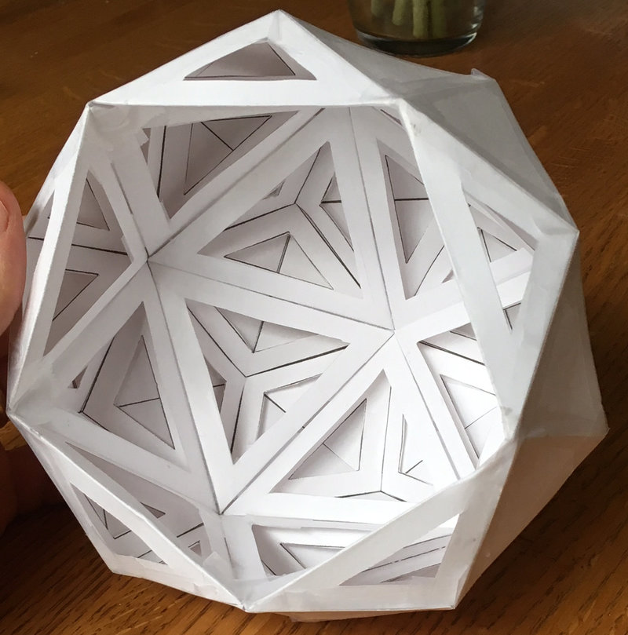
The outside shape is the top 3/4ths of a 60-sided pentakis dodecahedron:
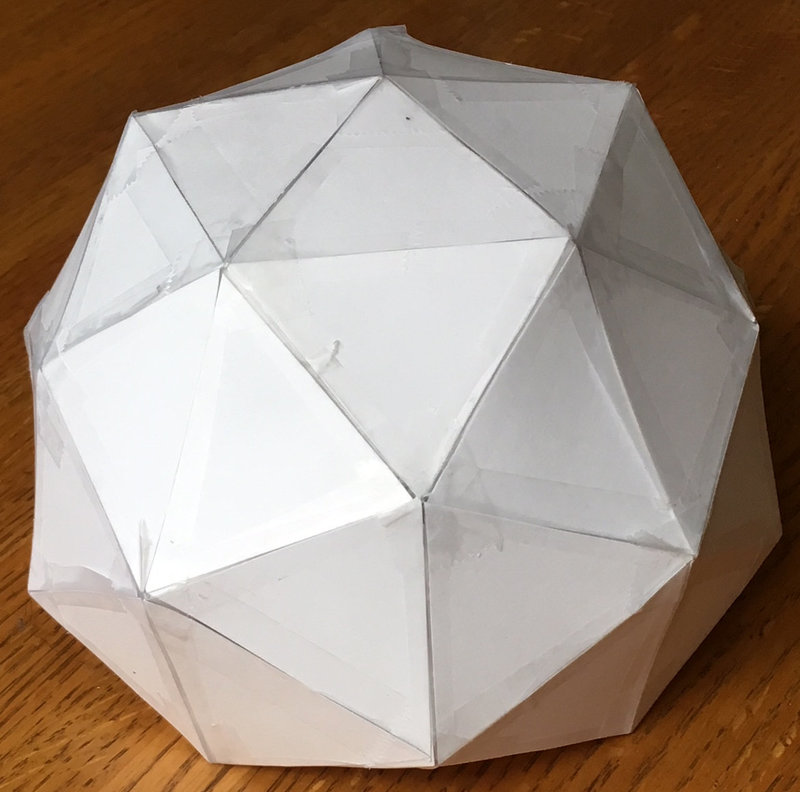
This dome is constructed from the surfaces the Icosahedron, the Triakis Icosahedron and a Pentakis Dodecahedron. Those terms sounds like a mouthful, but their meanings are fairly simple:
| 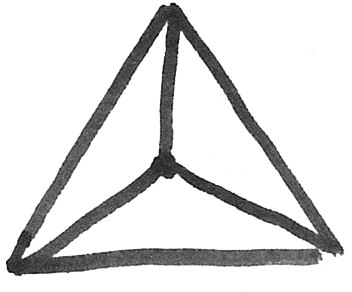 | Triakis: For each original triangular face of the polyhedra, add a new midpoint on the triangle and form three new triangular faces. (In 3D, this midpoint should have same radius as the other vertices.) |
| 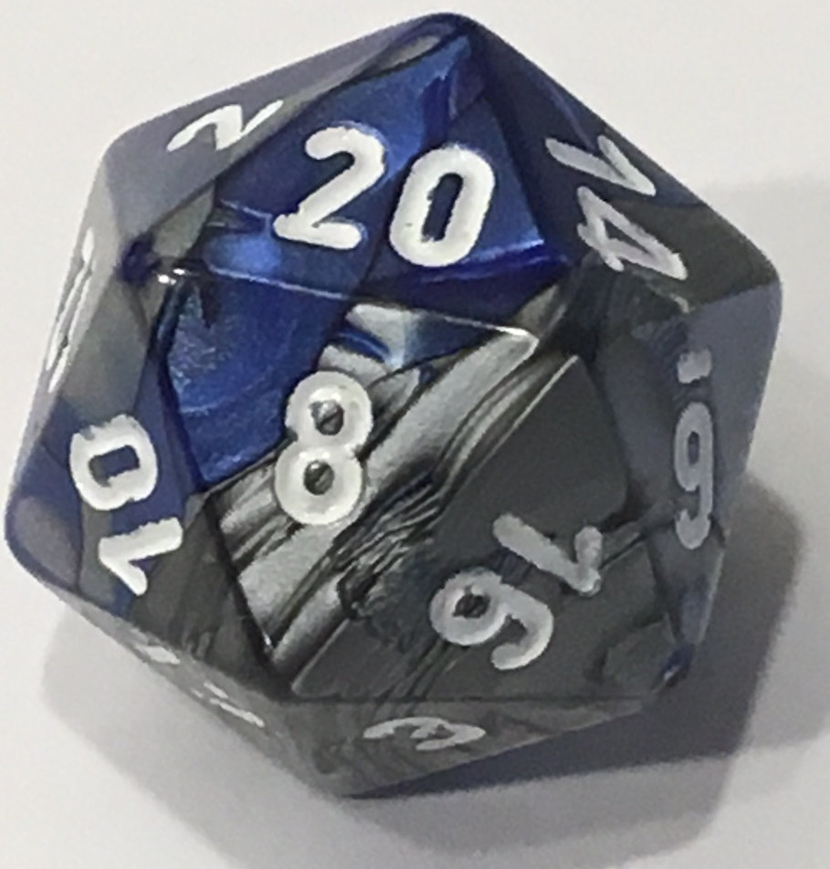 | Icosahedron: The 20-sided platonic solid formed by connecting 5 equilateral triangles at every vertex. |
| 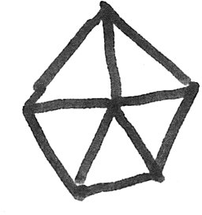 | Pentakis: The same as “tri-akis”, but for pentagonal faces, thus making five new triangles. |
| 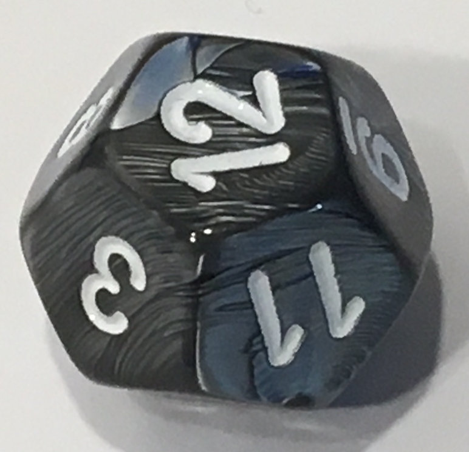 | Dodecahedron: The 12-sided platonic solid formed by connecting 3 regular pentagons at every vertex. |
There are a few advantages to constructing a dome of this type:
- It is fairly simple: there are only three different triangle shapes that need to be cut out.
- Every edge is part of at least one tetrahedron, making it incredibly strong and rigid.
- The tetrahedra form trapped spaces between an ‘inner’ dome surface and an ‘outer’ dome surface. This space may be useful as a type of crawlspace for insulation, wiring, or ventilation.
- Even if the dome is not connected to the ground, it is rigid and self-supporting. This is unlike most other geodesic domes, which require strong connections between foundations and the rest of the structure or they fold or collapse.
- As with other domes, the edges can be made first as a skeleton and then the faces attached later, or the faces can be flat and connected with a suitable edge-connection method. In the latter case, a larger structure could be made entirely out of plywood, stamped metal, glass, or perhaps ceramic tile.
In the rest of this article, I will next briefly review how other geodesic domes are made, discuss their advantages, then talk about the problems I encountered in them while making paper models, and then how to make this new dome structure.
Background: Geodesic Dome Construction
What is a geodesic dome, anyway? How do you decide the sizes of all those little triangles? Although they initially may appear very mysterious, geodesic structures are actually formed from very simple patterns.
Most domes are created from regular platonic polyhedra. What are those? Well, if you have ever played games with 4-, 6-, 8-, 12-, and 20-sided die)-sided dice, you have seen all the platonic polyhedra. If you have not, it may be a fun exercise to cut out paper triangles, squares, and pentagons, and try to rediscover the shapes yourself. The five platonic solids are the only polyhedra with these two properties:
- Every edge has the same length
- Every face is the same polygon
Typically, people making geodesic domes choose a tetrahedron (4-sides), octahedron (8-sides), or icosahedron (20-sides), because these polehedra may be formed using, respectively, 3, 4, or 5 equilateral triangles connected together at each vertex.
For geodesic domes, the icosahedron is by far the most popular choice of a starting shape because it is already closer to a sphere than the other platonic solids.
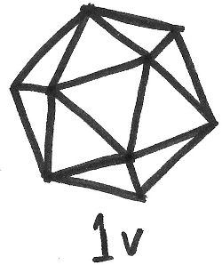
The next step is to divide the edges of each triangle into \(v\) smaller pieces, and then form smaller triangles connecting the new midpoints. In general, the \(v\)th level subdivision is made by breaking each edge of the triangle into \(n\) pieces:
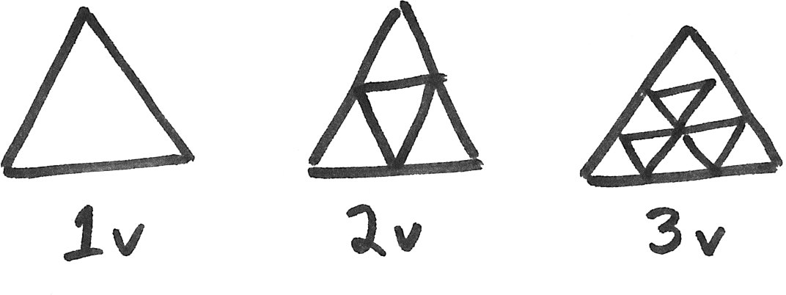
For the rest of this example, we will use the 2\(v\) subdivision. So let’s draw a 2\(v\) subdivided icosahedron:
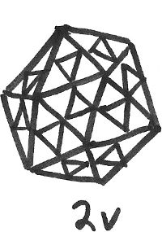
The last step is “push out” the newly created vertices so that they also lie on the surface of the sphere defined by the original polyhedron. As the points are pushed out, their angular coordinates (i.e. latitude and longitude) on the surface of the sphere must not change.
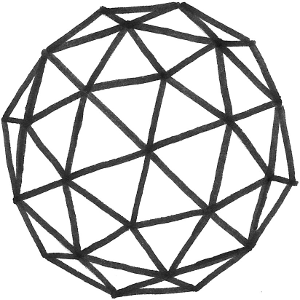
Mathematically, this last operation is simply the constraint that every vertex \((x_i, y_i, z_i)\) be the same distance \(d\) from the center of the polyhedron:
\[d = \sqrt{x_i^2 + y_i^2 + z_i^2}\]Working out the analytic solutions for the lengths of the triangles in the \(v\)th subdivision of various polyhedra is within the abilities of many high school students, and perhaps even a few gifted middle school students, but it does take some patience and persistence. Thankfully, there are many… good… examples to start from if you are curious about calculating the coordinates.
Advantages of Domes
Geodesic domes are attractive structures in part because they are so simple – there are only 2 different triangle shapes needed for the 2v and 3v designs. When I helped organize the 2017 Portland Science Hack Day, one of our kid zone activities was to assemble a geodesic dome out of cardboard. We used a 40W laser cutter to quickly cut the cardboard (25 of the 18x18x24” boxes from HomeDepot is plenty, costing $36.50 in total), and stuck it together the edges with tape remarkably quickly:
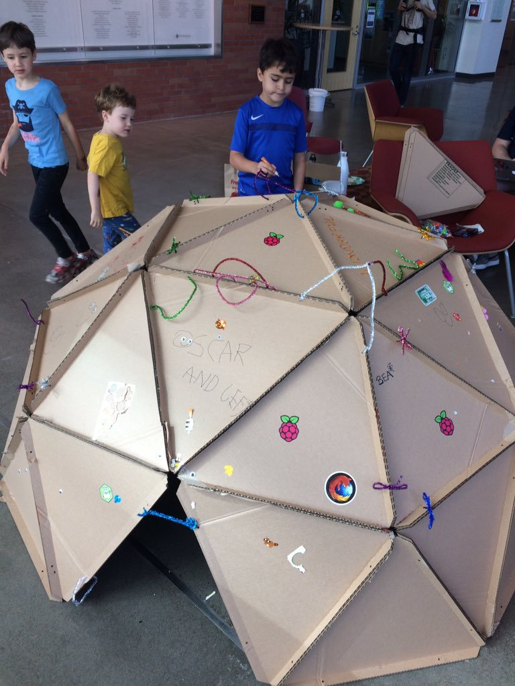
Some people even build entire homes this way. Advocates of geodesic dome homes tout the design as being one of the strongest, most material-efficient types of structure possible, and most engineers who look at one will immediately be able to give several reasons why this is true:
- Of all possible shapes, a sphere has the highest ratio of volume to surface area. All other things being equal, this means that there will be fewer materials used to construct a home with a certain volume. There will also be relatively less energy lost through the surface, so it will be cheaper to heat or cool.
- Spheres are doubly-curved surfaces, which are generally more rigid than singly curved surfaces like cylinders that can crush or kink. You may have noticed how the rounded bottom of an aluminum can is much stronger than the sides, even though the metal is the same thickness.
- Geodesic domes are constructed from many small triangles. Triangles cannot pivot or bend at the joints, unlike squares or other polygons, and are thus one of the strongest shapes in engineering. One glance at the truss structures used in cranes, planes, and spacecraft are all based on the concept of “triangularizing” a structure to make it as rigid and strong as possible.
Weakpoints of Geodesic Domes
One big surprise that the paper geodesic dome models revealed to me was how the strength of the geodesic dome absolutely depends on it being connected at the base where the geodesic dome touches the ground. Although a completed sphere is quite strong, a dome has very little strength unless its edges are securely anchored to the ground!
It’s hard to show in photos, but the paper geodesic dome I made appears to support itself when sitting on the table, but it quite floppy and easily curls up into strange shapes if the base edge is not taped down.
| 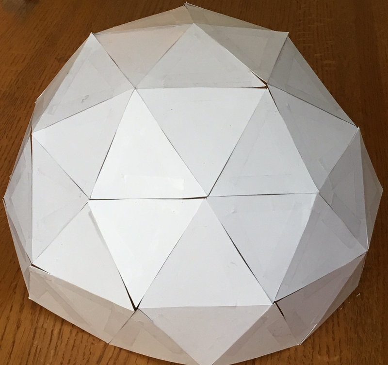 | 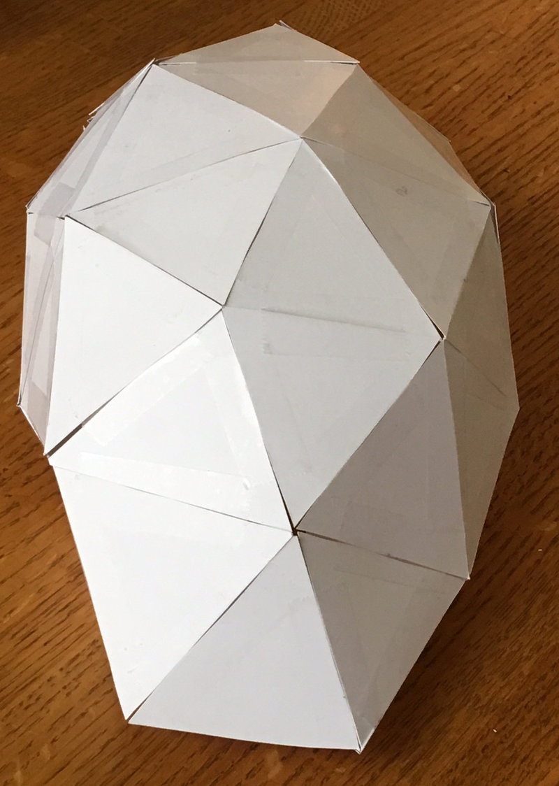 |
Although a dome constructed with thick members like wood or metal might appear self-supporting, this is not mathematically true, and failure to connect the foundation of the dome will result in only a fraction of the true strength being developed.
Constructing the Pentakis Dodecahedron
One of the fastest ways for me to develop intuition for structures that are too complicated to visualize is to build small mock-ups. I have always liked arts and crafts, so I printed out some templates of various shapes on thick card stock paper, and taped the edges together with scotch tape. If you have an hour to spare, I encourage you to unleash your inner elementary school student, grab your scissors (and maybe a drink and a podcast too!), and try making one of these yourself.
Here’s how to make it:
First, print out six copies of the PDF of this design.
Next, cut out the triangular tetrahedra. Optionally, you may also use a knife to cut out the insides of the triangles, if you want to be able to see the internal structure.
Then, fold the sides up and tape them together to form tetrahedra:
| 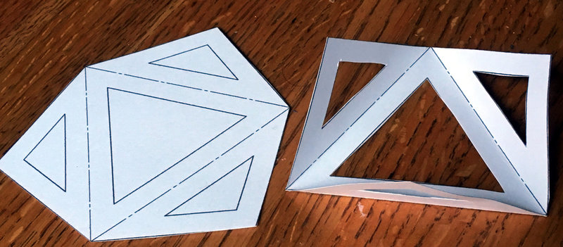 | 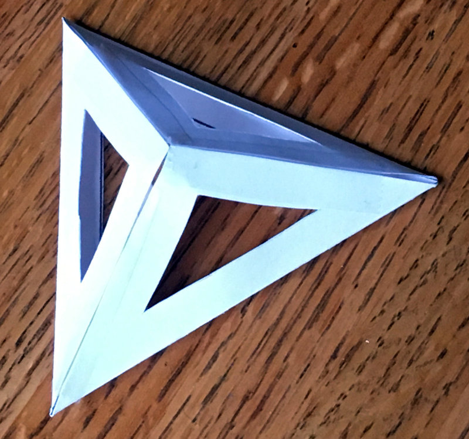 |
When you have five tetrahedra, tape them together along their edges. This creates one quarter of a triakis icosahedron.
| 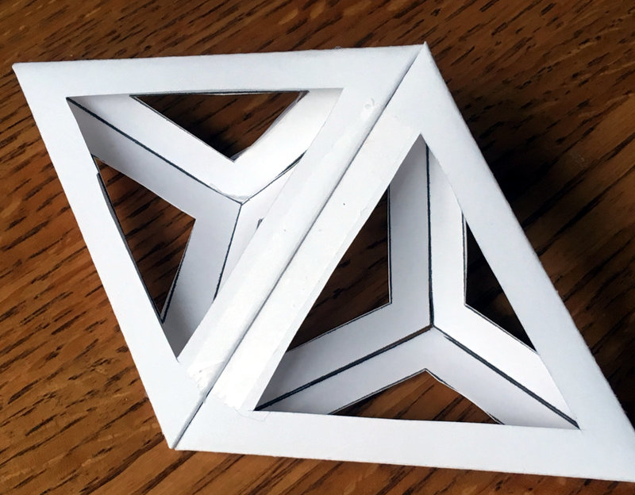 | 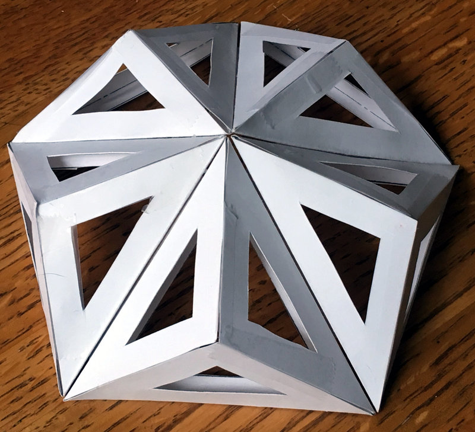 |
Finally, cover the surface with the smaller pentakis triangles.
| 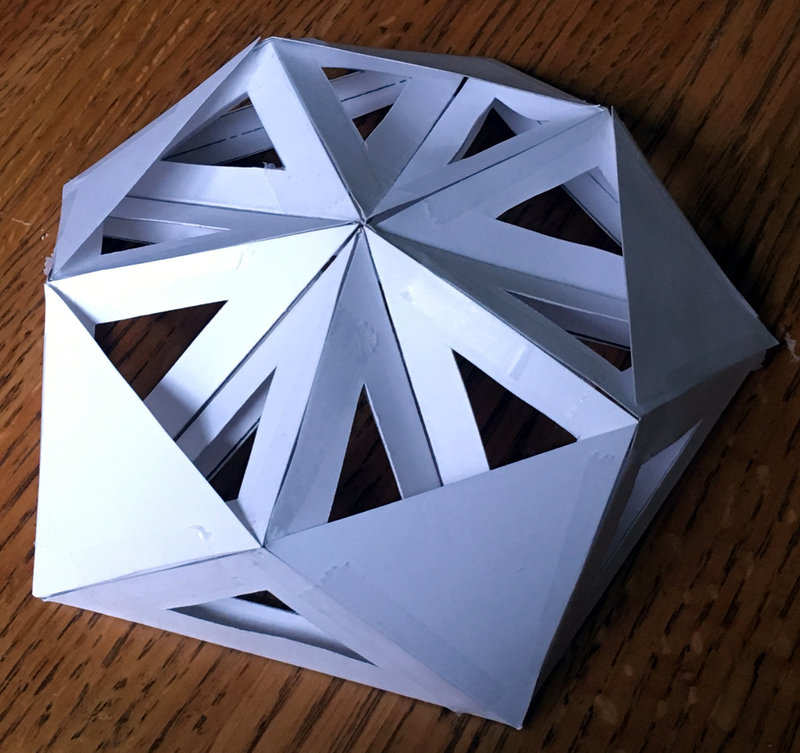 | 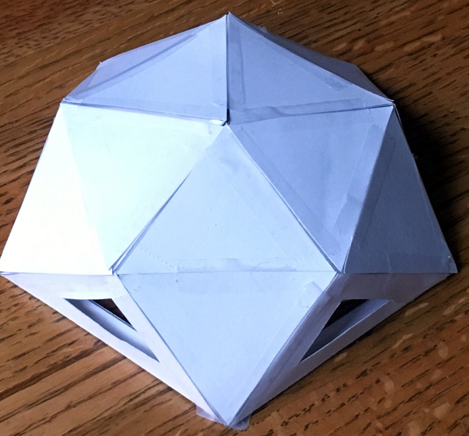 |
Repeat this process to the edges of the small dome you just created, adding more tetrahedra and skin surfaces in this way until you have 3/4ths of a complete sphere.
While you are cutting out paper, you may also want to compare the relative strength of this with other common shapes:
- Paper template for an icosahedron
- Paper template for a dodecahedron
- Paper template for a 2v geodesic dome
- Paper template for a pentakis dodecahedron
If you want to make new triangles and create your own reinforced pentakis dodecahedron of arbitrary size, the magic numbers for a dome of radius \(r\) are:
- The icosahedron’s equilateral triangles have three edges of length \(l_1 = 1.0514622 r\)
- The triakis icosahedron’s icoceles triangles have one edge of length \(l_1\) and two edges of length \(l_2 = 0.66500310 r\)
- The pentakis dodecahedron’s icoceles triangles have one edge of length \(l_2\) and two edges of length \(l_3 = 1.12732203 l_2\)
If you would like to estimate the amount of flat material that you will need, you will find Heron’s Formula useful:
\[A = \sqrt{s(s-a)(s-b)(s-c)}\]where \(A\) is the area of a triangle, \(s=\frac{1}{2}(a+b+c)\) is half of the perimeter of the triangle, and \(a,b,c\) are the lengths of the sides of the triangle.
A note on Duality
It’s fun to look at the mathematics of these polyhedra as well. Basically, this dome is constructed by starting with an icosahedron, adding tetrahedra to the outside, and then add pentagons to the new points defined by this, and then scaling all the radii carefully. Here is an early model whose vertices’ radii are not all equal:
| 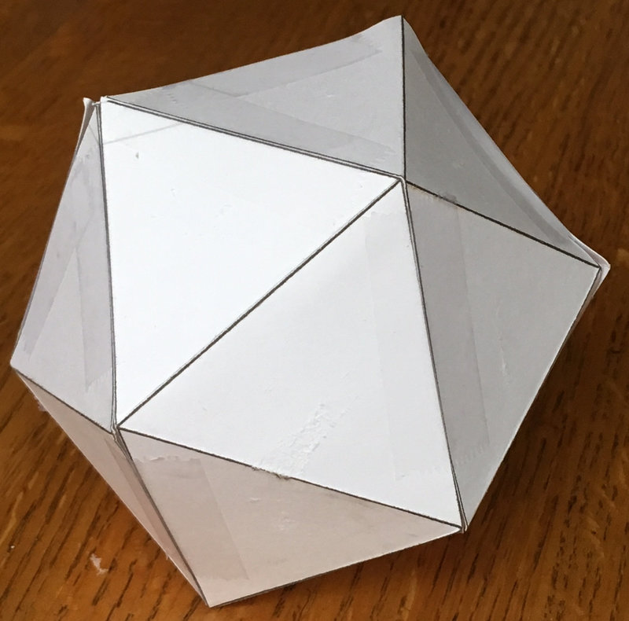 | 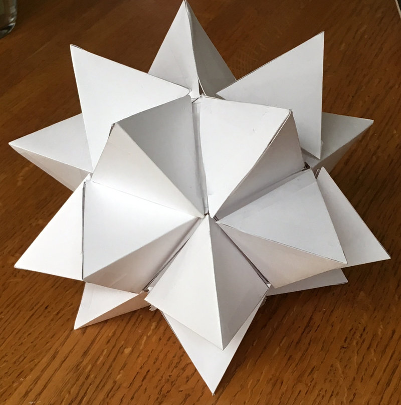 |
The above tetrahedra that I taped to the outside of the icosahedron are very big, creating a great stellated icosahedron instead of a triakis icosahedron. If you were to connect the tips of these tetrahedra, they would define 12 new pentagonal surfaces, because the “dual” of the icosahedron is the dodecahedron.
Duality expresses a mathematical symmetry that appears in many different disciplines, and while a full post on duality is out of scope of this article, the core thing to realize is that in this example of duality, the number of sides and vertices switch:
- Icosahedron: 12 vertices, 20 (triangular) sides
- Dodecahedron: 12 (pentagonal) sides, 20 vertices
And also the number of faces and the sides of each face switch:
- Icosahedron: 3-sided faces, 5 faces connecting at each vertex
- Dodecahedron: 5-sided faces, 3 faces connecting at each vertex
If we reduce the radius of the tips of the great stellated icosahedron, the shape becomes a “triakis icosahedron”, in which all vertices have equal radii. By happy coincidence, the convex hull of those vertices defines a pentakis dodecahedron. It is pretty neat that all of the vertices are still at a constant radius.
Conclusion
Most of us would rather live in a beautiful home than one with efficient geometry, so perhaps it is not a surprise that geodesic designs are not very popular and take a backseat to traditional construction techniques. Personally, I find domes to be so ugly that they are actually kind of cute, but I understand that they might not pass muster with the local homeowners association.
Aesthetics aside, dome construction is probably best reserved for extremely harsh environments: cold-weather shelters, underground structures, or perhaps spacecraft. If the spaces between the icosahedron and pentakis dodecahedron were sealed airtight, they could also act as insulation, floatation chambers, or – for extraterrestrial homes – as airlocks that protect the inner chamber.
It is a big world out there, and because it is unlikely that I am the first person to think along these lines before, please let me know of other examples of this structure and other more developed implementations. I would be really curious to see pictures of real structures implementing this shape.
Future Directions
As with any thought experiment, this little game raised more questions than it answered:
- Are there other shapes that may also be connected such that every edge is part of a tetrahedron? Is this possible with every triangularized shape and its dual?
- How does one further subdivide the triangles of this structure to make it more spherical, as was done with the 2v, 3v, and higher-order geodesic domes, while keeping every edge part of at least one tetrahedron?
There are fun engineering topics that would also be worth figuring out for this structure:
- If this were made of fabric instead of rigid materials, could this be made a self-inflating structure by filling the tetrahedral cells with compressed air or expanding foam?
- Could this be made entirely out of ceramic tile or glass, connected at the edges in a manner that avoids stress concentrations? Where are the stresses in each trianglular member?
- Would this be strong enough to be buried underground as an earth-sheltered home? On earth…or mars?
- How could the corners and edges of this structure be safely and cheaply sealed against water intrusion? How could condensation be removed from the inside?